Abra o Flowlab e entre em MY GAMES


O clipe repete sozinho. Repare onde o cursor vai antes de clicar.
Foto da tela.
Abra o navegador em flowlab.io e entre com a sua conta.
No alto da página, clique em My Games. Aparecem os jogos que você já fez.
- Não lembro a senha
- Chame o professor. Não crie conta nova: os seus jogos estão na antiga.
- A lista está vazia
- Confira se entrou com a mesma conta das outras aulas.
Crie um jogo novo


O clipe repete sozinho. Repare onde o cursor vai antes de clicar.
Foto da tela.
Clique no botão verde New Game, no canto de cima à direita da lista.
Abre uma tela com os tipos de projeto.
- Não acho o New Game
- Ele é o único botão verde da página, no alto à direita.
Escolha o PROJETO VAZIO


O clipe repete sozinho. Repare onde o cursor vai antes de clicar.
Foto da tela.
Na tela dos tipos, clique em Empty Project — o projeto vazio.
Abre o editor com a folha branca quadriculada.
- Escolhi outro e veio um jogo pronto
- Volte em My Games, apague esse e comece de novo pelo Empty Project.
Pinte o céu

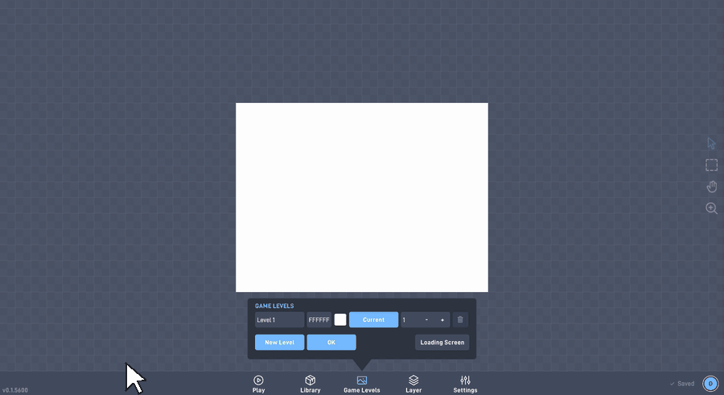

O clipe repete sozinho. Repare onde o cursor vai antes de clicar.
Foto da tela.
Clique em Game Levels, na fileira de baixo. Ao lado do nome Level 1 há um campo escrito FFFFFF — é a cor do fundo.
Clique nele, apague, escreva A8DADC e aperte Enter.
Esse azul claro é escolhido de propósito: a porta de hoje é escura, e precisa aparecer contra o fundo.
- Digitei e não mudou
- Aperte Enter depois de escrever. Sem ele o campo não vale.
Crie o jogador
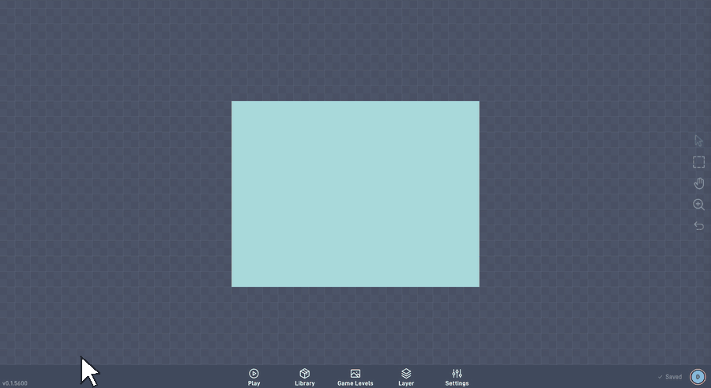
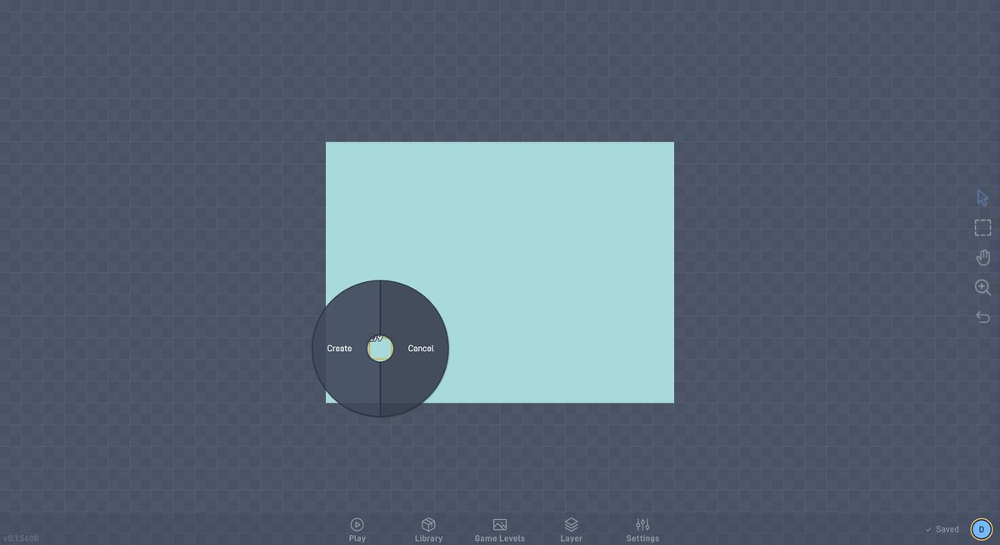
O clipe repete sozinho. Repare onde o cursor vai antes de clicar.
Foto da tela.
Clique uma vez dentro da folha azul, na parte de baixo, à esquerda — é de lá que ele vai começar a andar.
Abre a roda com Create e Cancel.
- Cliquei fora da folha
- Clique dentro do retângulo azul. Fora dele não nasce objeto.
Escolha CREATE
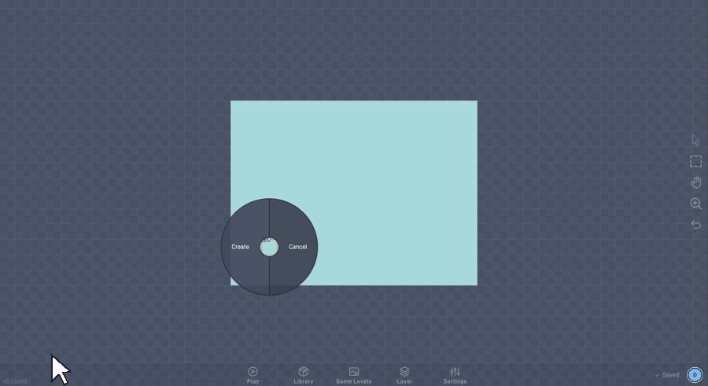
O clipe repete sozinho. Repare onde o cursor vai antes de clicar.
Foto da tela.
Na roda que abriu, clique em Create, na metade de cima.
Abre o painel do objeto novo.
- Cliquei em Cancel sem querer
- Clique na casa de novo e escolha Create.
Escreva JOGADOR nos dois campos
Foto da tela.
No campo Name, escreva Jogador e aperte Tab. No campo Type, escreva Jogador também.
O Type hoje trabalha duas vezes: no passo 16, quando a chave perguntar quem encostou em mim, e no passo 21, com a estrela. Sem ele a lista mostra New Type 1 e não dá para saber qual é qual.
- Escrevi só no Name
- Clique no campo Type e escreva lá também.
- Escrevi com acento
- Escreva sem acento. Acento em nome de peça dá problema mais para a frente.
Escolha o desenho do jogador
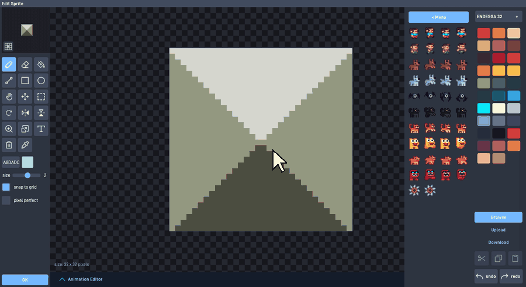
O clipe repete sozinho. Repare onde o cursor vai antes de clicar.
Foto da tela.
Clique no quadrado edit sprite, à esquerda do painel.
1. Clique em Browse, embaixo da paleta de cores.
2. Se aparecer o botão azul < Menu no alto, clique nele.
3. Clique em Flowlab Sprites e depois na faixa azul Characters.
4. Clique no primeiro boneco, no canto de cima à esquerda.
Para fechar, clique em OK, no canto de baixo à esquerda.
- Não acho o Browse
- Ele fica embaixo da paleta de cores, na coluna da direita.
- Cliquei e não mudou nada
- Clique bem em cima da figura, não no espaço entre elas.
A física do jogador
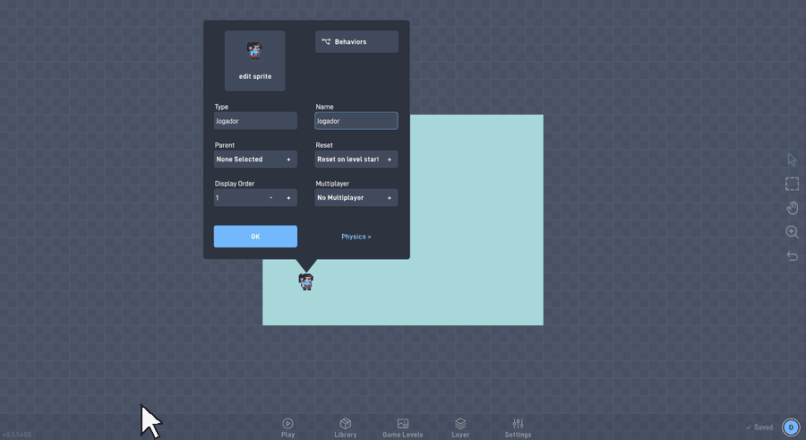
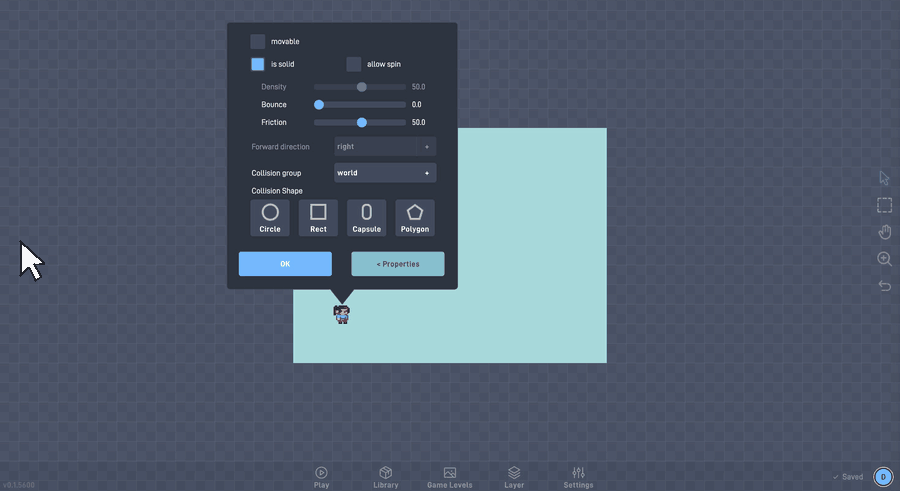
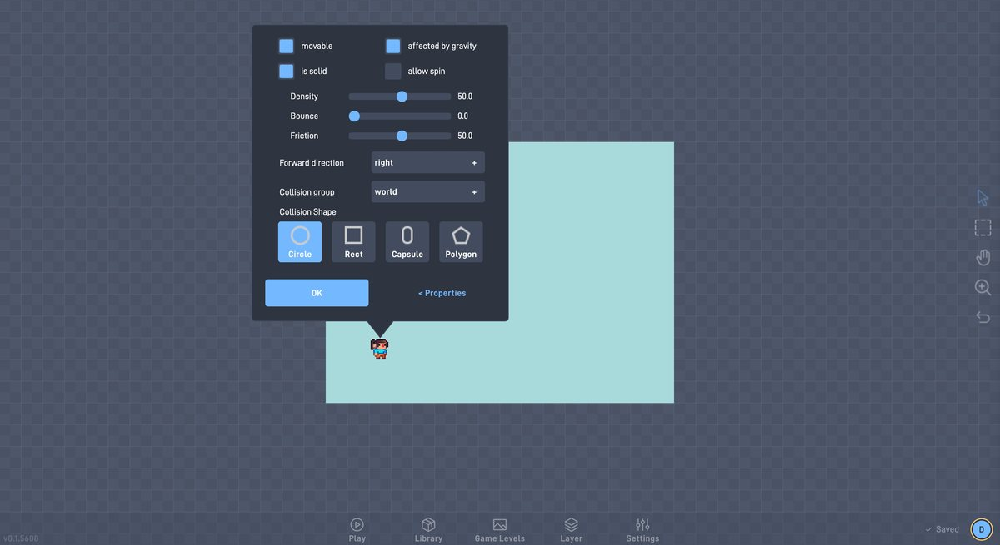
O clipe repete sozinho. Repare onde o cursor vai antes de clicar.
Foto da tela.
No painel, clique em Physics >, no canto de baixo à direita.
1. movable — marque. Sem ela nenhuma força move o boneco.
2. affected by gravity — deixe marcada. O jogo de hoje é de plataforma, como o da Aula 2: o boneco anda no chão e pula.
Feche no OK azul.
- Não acho Physics
- É um texto azul claro, pequeno, no canto de baixo à direita do painel.
- Desmarquei a gravidade
- Abra a física de novo e marque. Sem ela o boneco fica parado no ar.
Faça o boneco correr e pular
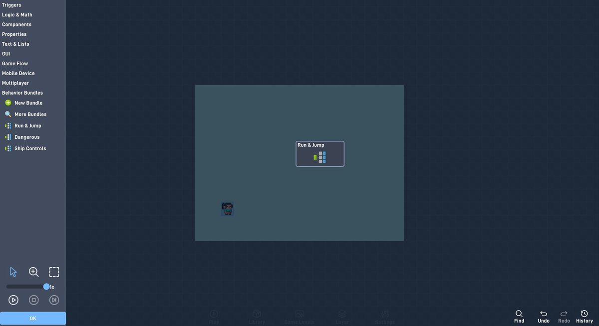
Foto da tela.
Com o jogador aberto, clique em Behaviors. Abre a mesa de blocos, vazia.
Na coluna da esquerda, lá embaixo, clique em Behavior Bundles e arraste o Run & Jump para o meio da mesa.
É o mesmo pacote da Aula 2: um arrasto só e o boneco ganha as setas e o pulo. Espere uns segundos antes de fechar — o Flowlab precisa de um tempinho para guardar.
- Arrastei e não caiu nada
- Solte no meio da mesa, longe da beirada. Perto da borda a mesa rola sozinha.
- Não acho Behavior Bundles
- É o último item da coluna da esquerda. Role até o fim.
Faça o chão
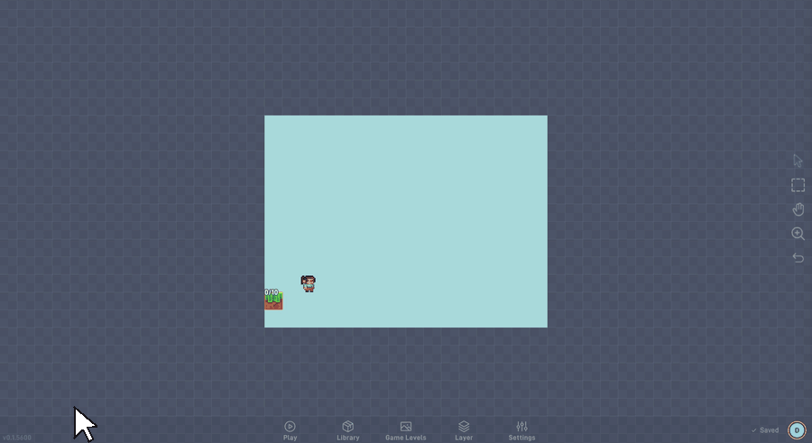
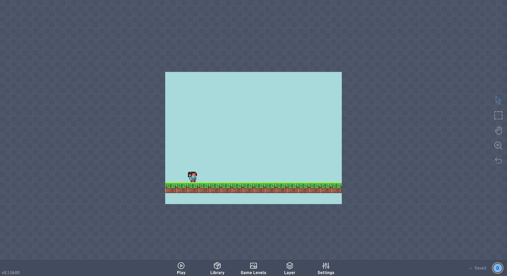
O clipe repete sozinho. Repare onde o cursor vai antes de clicar.
Foto da tela.
Feche as duas telas. Clique na casa do canto de baixo à esquerda da folha e escolha Create. Em Name e em Type escreva Chao. Em edit sprite, pelo Browse, pegue o primeiro bloco de Flowlab Sprites › Blocks — o de terra com grama. Feche no OK.
Agora repita a peça pela fileira toda: clique nela, escolha Clone e clique nas casas à direita, uma de cada vez, até a ponta. Para terminar, clique em done cloning.
- Ficou um buraco
- Clique na casa vazia, escolha Clone e preencha.
- O chão precisa de física?
- Não. Ele fica parado, e é isso que a gente quer.
Jogue e ande
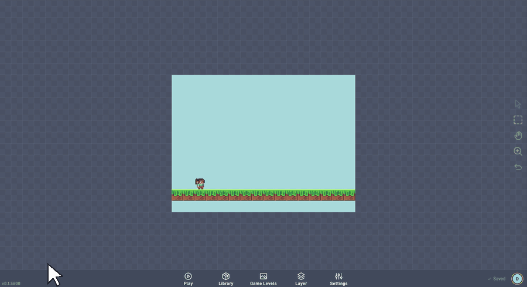
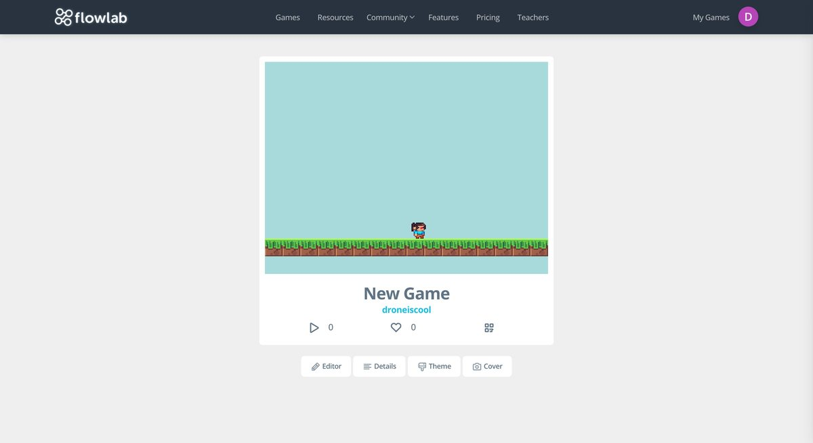
O clipe repete sozinho. Repare onde o cursor vai antes de clicar.
Foto da tela.
Feche as duas telas e clique em Play, na fileira de baixo.
Clique uma vez dentro do jogo para ele ouvir o teclado. Ande com as setas e pule com a seta de cima.
Ainda não há nada para fazer. É agora que o jogo ganha um problema.
- Ele não anda
- Clique uma vez dentro do jogo primeiro. E confira o passo 10: o pacote tem de estar na mesa.
- Ele atravessa o chão
- Confira se o chão foi criado como peça, e não desenhado no fundo.
Crie a CHAVE
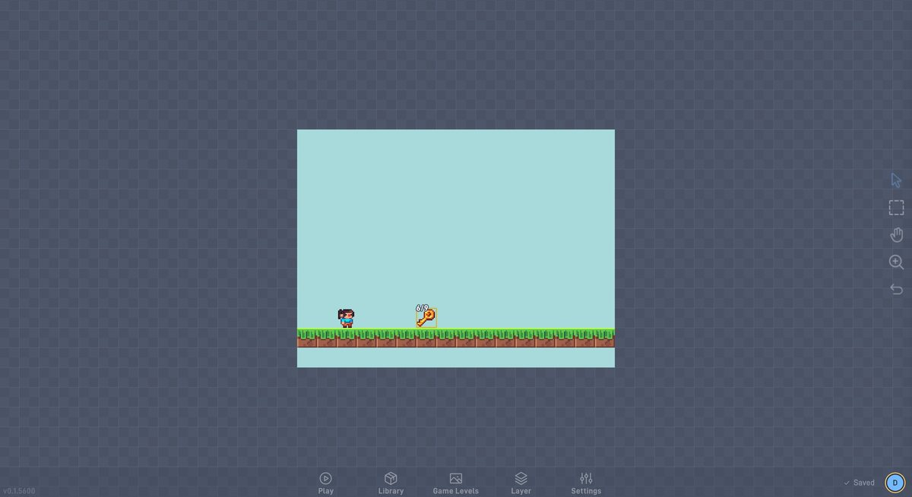
Foto da tela.
Volte ao editor pelo botão Editor, embaixo do jogo.
Clique numa casa do chão um pouco à direita do boneco e escolha Create. Escreva Chave nos dois campos.
Em edit sprite, pelo Browse, vá em Flowlab Sprites › Objects e procure a chave dourada — ela está no meio da grade, deitada.
- Não acho a chave na grade
- Role a grade de Objects. Ela é dourada e fica deitada, perto dos corações.
- Peguei o cadeado sem querer
- Tudo bem, pode usar: o que importa é você saber qual peça é a chave.
Levante a PORTA
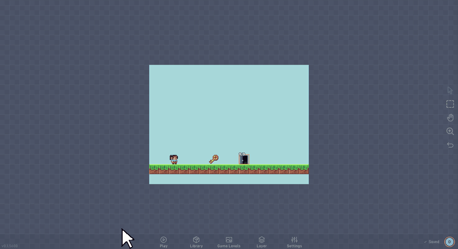
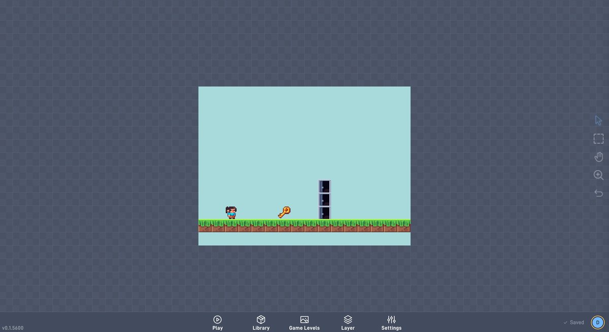
O clipe repete sozinho. Repare onde o cursor vai antes de clicar.
Foto da tela.
Clique numa casa do chão mais à direita ainda, depois da chave, e escolha Create. Escreva Porta nos dois campos.
Em edit sprite, pelo Browse, em Flowlab Sprites › Blocks, pegue o vão escuro com batente — ele parece uma porta aberta.
Agora faça a porta subir: clique nela, escolha Clone e clique nas duas casas acima dela, uma de cada vez. Clique em done cloning.
Ela ficou com três pedaços, alta demais para pular por cima. É esse o ponto: hoje o caminho está fechado.
- Consigo pular por cima
- Faltou um pedaço. Clone mais uma casa para cima.
- Clonei para o lado sem querer
- Clique na casa errada, escolha Delete, e clone de novo para cima.
Jogue e bata na porta
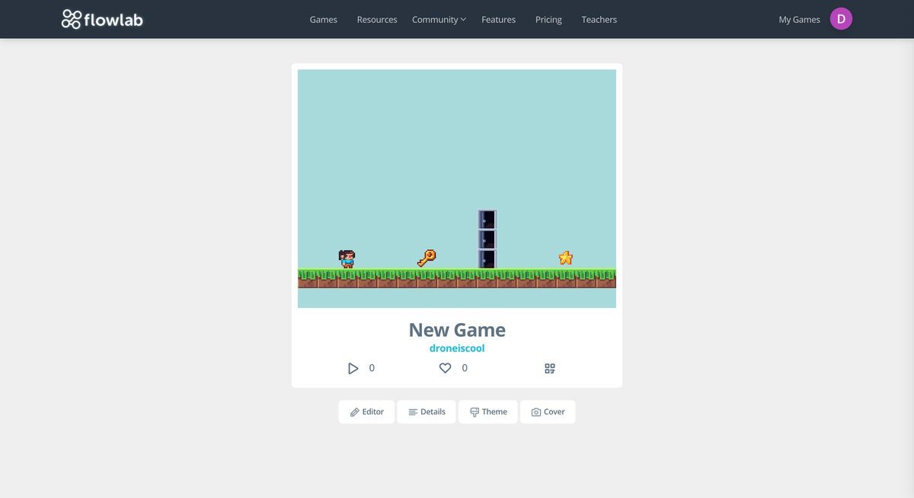
Foto da tela.
Feche as duas telas e clique em Play.
Clique uma vez dentro do jogo, ande para a direita e tente passar. Não dá. Pule: também não dá.
Guarde esta tela na cabeça — é o problema que os próximos passos resolvem. E repare que a chave, por enquanto, não faz nada: você passa por cima dela e nada acontece.
- Passo direto pela porta
- A porta precisa ser sólida. Abra a física dela e confira se is solid está marcado.
- A porta cai quando o jogo começa
- Abra a física da porta e desmarque movable: ela fica parada de propósito.
A chave manda um recado
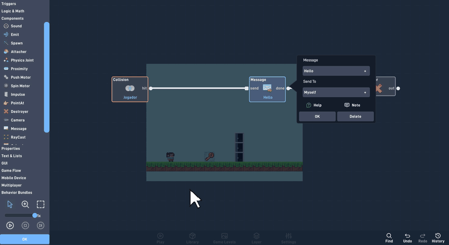
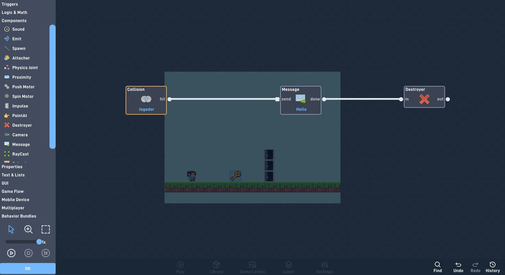
O clipe repete sozinho. Repare onde o cursor vai antes de clicar.
Foto da tela.
Volte ao editor, clique na chave e depois em Behaviors.
Arraste três blocos, bem espalhados:
1. Em Triggers, o Collision — à esquerda.
2. Em Components, o Message — no meio. É o bloco do envelope.
3. Em Components, o Destroyer — à direita.
Dois fios: da bolinha hit até a bolinha send, e da bolinha done até a bolinha in.
Diga com quem a batida conta: clique devagar no Collision e, na lista Any Type, escolha Jogador.
E agora o mais importante: para quem vai o recado. Clique devagar no Message. Onde diz Send To está escrito Myself — ou seja, a chave falando sozinha. Clique ali e escolha Choose objects. Aparecem mais dois campos: em Select Type, escolha Porta.
Lendo em voz alta: quando o Jogador encostar em mim, mande um recado para a Porta; quando o recado sair, eu sumo.
- Não acho o Send To
- Ele fica na janelinha de ajustes do Message, embaixo do primeiro campo. O seletor está na linha de baixo do rótulo.
- A lista não mostra Porta
- Falta o Type da porta. Volte ao passo 14 e escreva Porta também no campo Type.
- A chave some mas a porta fica
- O recado está indo para Myself. Volte no Send To e escolha Choose objects.
- O fio não gruda
- Solte os blocos mais LONGE uns dos outros e arraste devagar, de bolinha a bolinha.
A porta escuta
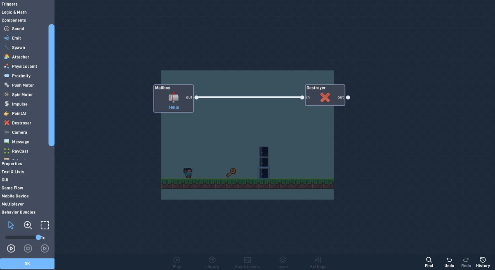
Foto da tela.
Feche as duas telas, clique na porta e depois em Behaviors.
Dois blocos:
1. Em Triggers, o Mailbox — o bloco da caixa de correio. Ele não espera tecla nem batida: ele espera recado.
2. Em Components, o Destroyer.
Um fio: da bolinha out do Mailbox até a bolinha in do Destroyer.
Repare que você não escolheu o nome do recado em nenhum dos dois. Os dois já nascem combinados em Hello — é como se fosse o único assunto que eles sabem conversar. Mais para frente dá para ter vários.
E você só fez isso uma vez, no molde. Os três pedaços da porta são cópias dele, e os três escutam.
- Não acho o Mailbox
- Ele está em Triggers, junto com o Collision e o Keyboard.
- Só um pedaço da porta some
- Você pôs os blocos num pedaço clonado, não no molde. Clique no pedaço de baixo, o original, e faça neles.
Jogue: a chave abre a porta
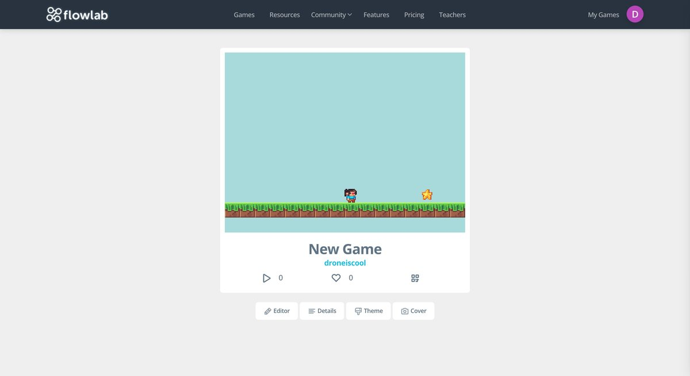
Foto da tela.
Feche as duas telas e clique em Play.
Clique uma vez dentro do jogo e ande para a direita. Ao encostar na chave, ela some — e a parede inteira some junto.
Pare um segundo para ver o que aconteceu: a chave não tocou na porta. Ela falou com a porta, de longe. Esse é o passo da aula.
- A chave some e a porta não
- O Send To ficou em Myself. Volte ao passo 16.
- Nada some
- Confira o Collision da chave: ele tem de estar em Jogador.
- Some um pedaço só da porta
- Os blocos foram parar num clone. Ponha no molde — a peça de baixo, a que você criou.
Ponha a ESTRELA do outro lado
Foto da tela.
Volte ao editor. Clique numa casa do chão bem à direita, depois de onde estava a porta, e escolha Create.
Escreva Estrela nos dois campos. Em edit sprite, pelo Browse, pegue a estrela dourada em Flowlab Sprites › Objects.
- Pus antes da porta
- Clique nela, escolha Delete e ponha depois. Senão dá para pegar sem a chave.
Encostou na estrela, ela some
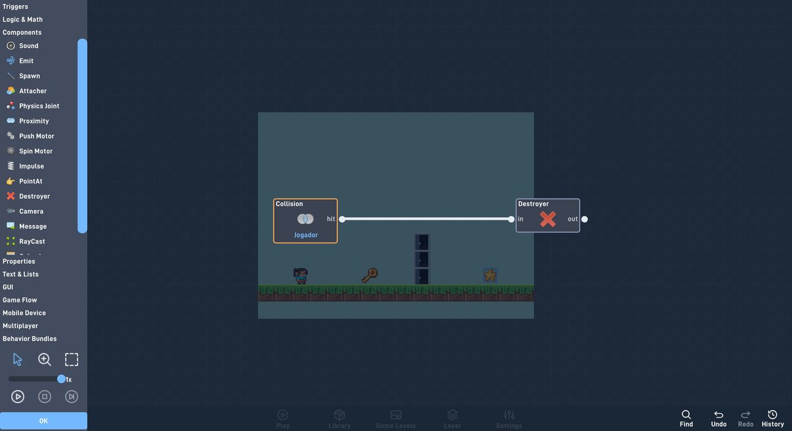
Foto da tela.
Com a estrela aberta, clique em Behaviors.
1. Em Triggers, arraste um Collision.
2. Em Components, arraste um Destroyer.
3. Ligue a bolinha hit na bolinha in.
Clique devagar no Collision e escolha Jogador na lista.
É a mesma dupla da moeda da Aula 1, e ela diz peguei sem precisar de palavra nenhuma.
- A estrela some sozinha quando o jogo começa
- O Collision ficou em Any Type e está contando o chão. Escolha Jogador.
- Encosto nela e não some
- Confira o fio: ele tem de ir de hit até in.
Jogue e mande o link
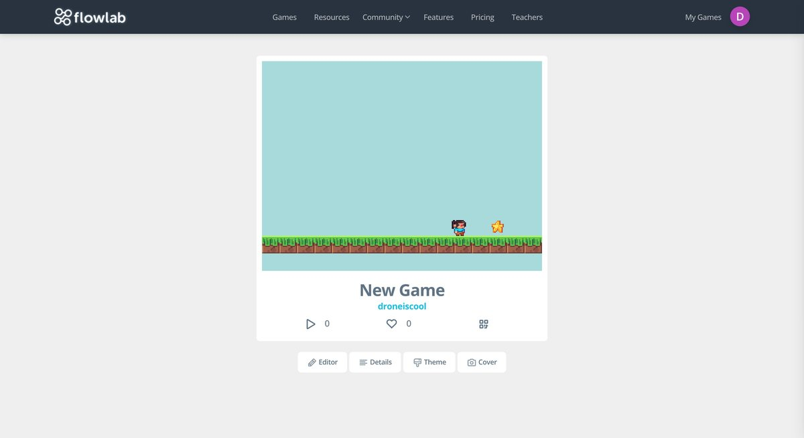
Foto da tela.
Feche as duas telas e clique em Play.
Ande para a direita, pegue a chave, passe pela porta que abriu e encoste na estrela. Ela some: você ganhou.
Para mandar para alguém: copie o endereço que está na barra do navegador e mande. Quem abrir já joga, sem instalar nada — e vai ter de descobrir sozinho que precisa da chave.
- Está fácil demais
- Ponha a chave num lugar alto, em cima de um bloco, para a pessoa ter de pular até ela.
- Quero duas portas
- Dá: crie outra porta com o mesmo Type Porta, e o mesmo recado abre as duas.